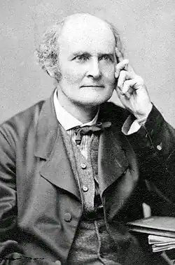
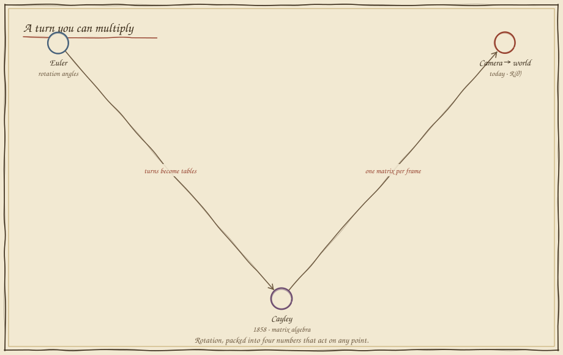
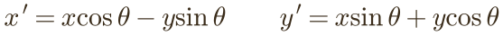

The Rotation Machine
In which the camera swears the target is on the left while the world insists it is due north, and four numbers settle the argument.
The camera's private compass
The robot's camera reports the target at "20° to my left." True — from the camera's point of view. But the robot's body is turned, so the camera's "left" is not the world's "left." Drive on the raw camera bearing and see where you end up. Then rotate the body and watch the lie grow.
The camera is never wrong — it just speaks its own language. To act in the world, the robot must translate every camera direction by exactly the body's rotation. That translation is a machine that takes any point and turns it: a rotation matrix.
A turn you can multiply
Rotations were geometry until someone noticed they could be arithmetic — a little grid of numbers you multiply into a point to spin it. That grid, the matrix, became the workhorse of all of engineering.



Four numbers that spin a point
Here is the whole machine. To rotate a point by angle θ, mix its old coordinates with sine and cosine — the same shadows from Folio 05, now doing work. Turn the dial and watch the shape rotate rigidly, every point obeying the same two lines.

Camera to world, and turns that stack
Now fix the robot. The camera hands you the target in its own frame; apply the rotation matrix for the body's heading and out comes the world direction — drive that and you arrive. And because two rotations in a row are just one bigger rotation, R(α)·R(β) = R(α+β), the robot can stack turns for free.
With the matrix on, the converted arrow lands on the true target no matter how the body is turned; switch it off and the robot chases the camera's private compass into the weeds. This one multiplication — camera to body to world — runs in every self-driving stack on Earth.
What you can now build
Coordinate frames are the grammar of robotics — camera to body, body to arm, arm to gripper, gripper to world — and every link between them is a matrix you multiply. Master R(θ) and you can carry any measurement into any frame the robot needs. In Folio 13 these same turns become multiplication of complex numbers; in Folio 21, Hamilton's quaternions do it in three dimensions without the dreaded gimbal lock.
Field exercise: stand facing a wall and point at a lamp — note its bearing. Now turn 45° and point again; the lamp's bearing relative to you changed by exactly 45°, though the lamp never moved. You just ran the rotation matrix in your own head.
continue to folio 11 — the speed of speed return to the codex map